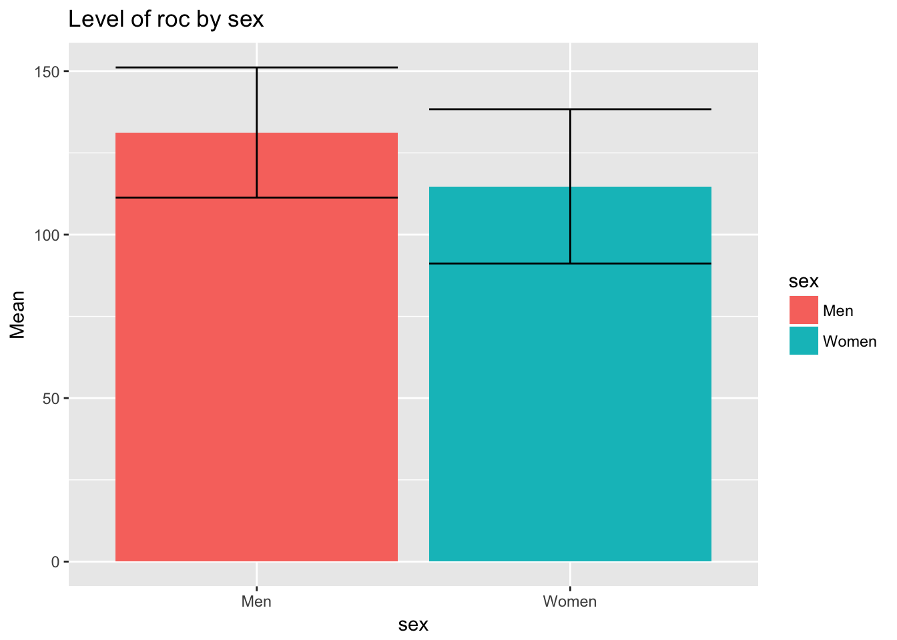
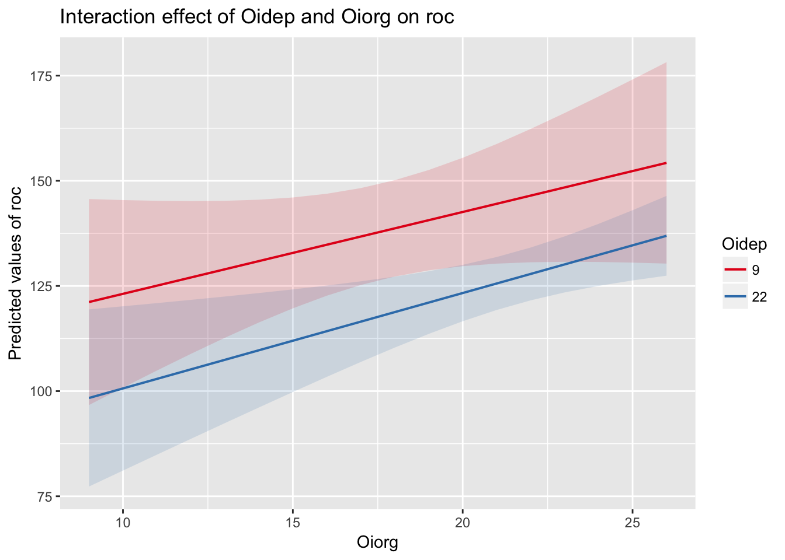
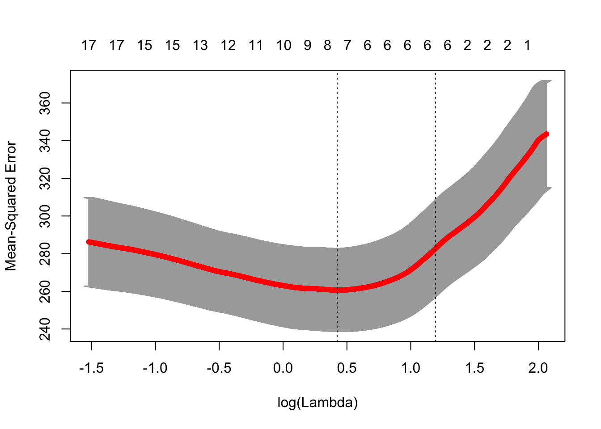

Посмотреть собранный html файл можно здесь: https://rhangelxs.github.io/r_socio_hse/README.html
Исходный код доступен в формате Rmd в моем репозитории на гитхабе, скачать исходный файл можно по ссылке: README.Rmd.

Сначала построим две модели:
Показатели последней модели (lm1) с интеракцией:
Call:
lm(formula = roc ~ Oidep * Oiorg, data = data)
Residuals:
Min 1Q Median 3Q Max
-51.73 -15.57 1.28 15.31 41.26
Coefficients:
Estimate Std. Error t value Pr(>|t|)
(Intercept) 121.4591 47.6636 2.55 0.012 *
Oidep -1.9775 2.8275 -0.70 0.485
Oiorg 1.7235 2.5140 0.69 0.494
Oidep:Oiorg 0.0248 0.1428 0.17 0.863
---
Signif. codes: 0 '***' 0.001 '**' 0.01 '*' 0.05 '.' 0.1 ' ' 1
Residual standard error: 20 on 161 degrees of freedom
Multiple R-squared: 0.122, Adjusted R-squared: 0.106
F-statistic: 7.45 on 3 and 161 DF, p-value: 0.000106Из вывода линейной модели нужно привести: \(R^2\), \(N\), \(p-value\), F-статистику
Для каждого регрессора (предиктора): Как минимум \(\beta-коэффициента\) и значимость + крайне желательно \(t\)-значние, либо \(SE\)
Сравним наши модели с помощью метода (stepwise regression1) модель с интеракцией и модель без интеракции.
Для этого нам поможет пакет lmSupport, но в целом можно ориентироваться на AIC и BIC. Но в нашем случае достаточно воспользоваться ANOVA (или diff-test).
SSE (Compact) = 62585
SSE (Augmented) = 62573
Delta R-Squared = 0.00016
Partial Eta-Squared (PRE) = 0.00019
F(1,161) = 0.03, p = 0.86В результате добавление инетеракции (аддитивный эффект) улучшает предсказательные способности модели (\(\Delta R^2\)) на 0.016%. Добавление интеракции значимо не улучшает показатели соответсвия модели данным (\(p=0.86\))
Нагляднее всего график:

В некоторых случаях в ручную отбирать регрессоры неудобно. Для этого можно использовать PLS (аля SEM), Ridge или Lasso.
Полезным будет техника разбиения выборки на обучающую и тестовую (80/20) из Machine Learning.
Для простоты предположим, что у нас нет никаких априорных представлений о модели. Попробуем найти самую удачную модель из всего датасета (включая исключительно числовые или факторные переменные).
В качестве интересующей нас (выходной) перменной мы зададим:
[1] "roc"Основаня проблема пакета glmnet в том, что ему на вход нужно подавать разреженные матрицы. Напишим для этого небольшую вспомогательную функцию (может даже не одну).
Warning: attributes are not identical across measure variables; they will
be droppedВ качестве предикторов числовых и категориальных предикторов у нас было 19 предиктор(а/ов): comp, sex, age, tenure, promo, satis, position, norms1, norms2, Oidep, Oiorg, StK, StI, StRA, StRE, Pemo, Ptime, Femo and Ftime.
Сразу следует удалить предикторы, предсказательная сила которых слишком высокая (например, в этот список могут попасть компоненты выходной переменной). Мы же не хотим проверять очевидные вещи :)
Затем следует вручную удалить предикторы, которые попали по ошибке (например, в этот список могут попасть компоненты выходной переменной). Внимательно посмотрим на вывод этой команды:
| variable.y | cor |
|---|---|
| Femo | 0.42 |
| StRE | 0.33 |
| Ftime | 0.32 |
| norms1 | 0.31 |
| norms2 | 0.30 |
.
В итоговый список предикторов для LASSO регрессии у нас попали 19 переменных: comp, sex, age, tenure, promo, satis, position, norms1, norms2, Oidep, Oiorg, StK, StI, StRA, StRE, Pemo, Ptime, Femo and Ftime
По умолчанию glmnet строит LASSO модель (alpha = 1), если нужна Ridged регрессию, то нужно указать параметр alpha = 0.
Выбираем лучшую лямбду
| lambda.min | lambda.1se |
|---|---|
| 1.528 | 3.297 |
[1] 3.3
| term | step | estimate | lambda | dev.ratio |
|---|---|---|---|---|
| (Intercept) | 1 | 115.7 | 3.297 | 0.2326 |
| satis | 1 | 0.3192 | 3.297 | 0.2326 |
| norms2 | 1 | 2.441 | 3.297 | 0.2326 |
| Oiorg | 1 | 0.1425 | 3.297 | 0.2326 |
| StRA | 1 | -0.1197 | 3.297 | 0.2326 |
| StRE | 1 | 0.0642 | 3.297 | 0.2326 |
| Femo | 1 | 1.741 | 3.297 | 0.2326 |
почему этот старый и добрый метод не современный написано тут: https://stats.stackexchange.com/questions/13686/what-are-modern-easily-used-alternatives-to-stepwise-regression↩